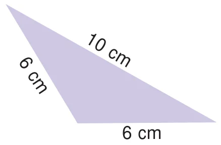
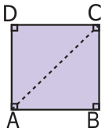
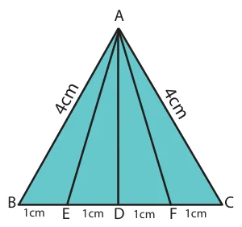
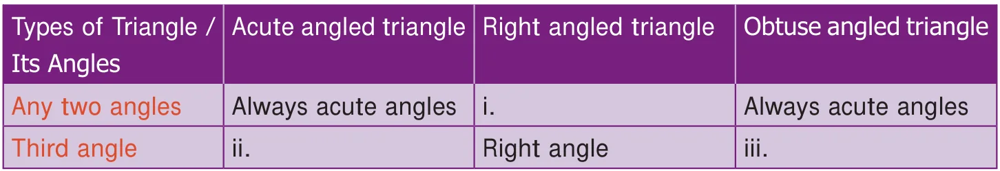

Exercise 4.3
Miscellaneous Practice Problems
- What are the angles of an isosceles right angled triangle?
- Which of the following correctly describes the given triangle?

- It is a right isosceles triangle.
- It is an acute isosceles triangle.
- It is an obtuse isosceles triangle.
- It is an obtuse scalene triangle.
- Which of the following is not possible?
- An obtuse isosceles triangle
- An acute isosceles triangle
- An obtuse equilateral triangle
- An acute equilateral triangle
- If one angle of an isosceles triangle is \(124^{\circ}\), then find the other angles.
- The diagram shows a square ABCD. If the line segment joins A and C, then mention the type of triangles so formed.

- Draw a line segment AB of length 6 cm. At each end of this line segment AB, draw a line perpendicular to the line AB. Are these lines parallel?
Challenge Problems
- Is a triangle possible with the angles \(90^{\circ}\), \(90^{\circ}\) and \(0^{\circ}\)? Why?
- Which of the following statements is true? Why?
- Every equilateral triangle is an isosceles triangle.
- Every isosceles triangle is an equilateral triangle.
- If one angle of an isosceles triangle is \(70^{\circ}\), then find the possibilities for the other two angles.
- Which of the following can be the sides of an isosceles triangle?
a) 6cm, 3cm, 3cm b) 5cm, 2cm, 2cm c) 6cm, 6cm, 7cm d) 4cm, 4cm, 8cm
- Study the given figure and identify the following triangles.

- equilateral triangle
- isosceles triangles
- scalene triangles
- acute triangles
- obtuse triangles
- right triangles
- Two sides of the triangle are given in the table. Find the third side of the triangle.

- Complete the following table:
